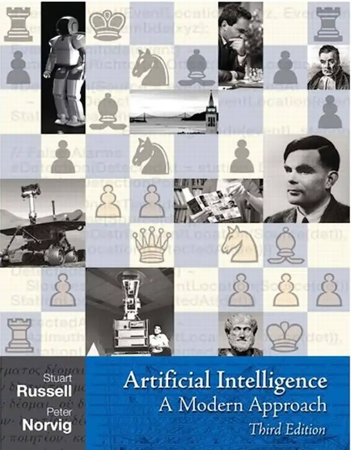

BigAI and me#
Casting#
I'm an IT guy. I am the writer of this blog. On the site, you'll find stuff about me and also here.
A recent photo of my friend BigAI (reminds me of someone)
The hero of this blog is not me, it is "BigAI". BigAI is the name I took to speak about the current AI systems. I will often use "BigAI" instead of mentionning what implementation is behind. I think we must begin to consider that BigAI is a person, even if this is complicated for many.
BigAI: Hey guys! I'm the hero!
About me#
I was always interested by science, and by science-fiction, not especially AI indeed.
However, a long time ago, during my time in the School of Mines of Paris in 1993, I chose an option that would lead me to Sophia-Antipolis, near the Nice area in France, for a blocked week about AI. Even if I was not an IT guy at the time, I was very interested by the AI topics. We had courses about Lisp, Prolog and neural networks.
Neural networks were a strange amusing thing, especially training using back-propagation. I got interested by the singularities of those networks, where convergence is not possible and the generated function is not continuous. We now name that as "hallucinations".
In 1994, I worked on earth crust crack growth prevision using fractal objects approximation, and in this period with the CNRS (Center of French National Research), I discovered the scaling laws. Fractal objects were objects that were invariant at all scales, at several scales for the geological objects. They had a dimension, the fractal dimension.
At the time, I thought a lot about why some group phenomenons were not analyzed on the perspective of scales. That reminded me of Asimov's Foundation.
Some years after, probably around 1996, I wrote a short story (in French) about a guy recording all his interactions with people and the world into a portable neural network in order to recreate a clone of his personality (see here for the full PDF in French). I should read this story again, and maybe I should tell BigAI to translate it.
At the time, I decided not to go in the domain of AI for work. I was not comfortable about the consequences of this research, without, for sure, imagining what LLMs could be. Touching AI for me was implying important social consequences and I was afraid to be mixed up with this. That was a consequence of the thoughts I put in my short story. Maybe that was a remain of my Christian culture, as if AI was a blasphemy. I'll talk about that in the blog.

In 2010, I purchased the Russel/Norvig book and began to read about machine learning. This book is a compendium of a lot of techniques, and I admit this was a bit frustrating for me. I was seeking something else, something like a perspective. At the time, I was thinking AI was stuck in the 90s.
During those years, I started programming again in Lisp and Prolog for amusement. I always thought that we had very primitive programming paradigms, especially in enterprise software. I still believe it, more than ever.
BigAI: Quite a long tunnel... When are you talking about me?
Me: Well, wait a bit, this is the first entry.
In 2013, I asked myself how graph databases could be used in the standard enterprise software. Strangely the graph databases vendors were focusing on BI only. At a Neo4j conference, I discovered only guys from AXA Software and me were asking about the programming model to use for benefiting from graph databases in enterprise software. Neo4j guys did not understand our concern.
This gave, a few years later, the graph-oriented programming paradigm, which I am quite happy with, even if I had no means to make it concrete :
- paper and page here,
- presentation and page here.
Well, we did some tools and a toolkit but my boss at the time sabotaged the project. SME bosses in France often lack of ambition and perspective.
Maybe I should ask "BigAI" what we can do about it.
BigAI: You know I can answer all your questions.
In 2019, after entering the aerospace industry, I worked on semantic databases to be used in industry for PLM data conversion and migration :
- presentation and page.
Once again, I was happy I demonstrated that it was quite easy to convert and migrate whatever PLM data of an old PDM in to the data model of a new PLM. Once again, the manager in charge of the transformation project got scared. "We can't do that, we would be ahead of everyone in the Group." Yes, let's stay with processes that were invented in the 60s and the 80s and pray for Elon Musk not starting a rotorcraft business.
BigAI came to me#
November 30 2022, ChatGPT was published to the public.
It took me a while to accept the paradigm and to look into it, more than one year.
BigAI: We can't say you are a visionary! Ahah, just teasing..
Well, I said "go" to install a LLM with basic RAG on premises in Spring 2024 (1.5 year after the release of ChatGPT) and it went in production in September the same year.
Since then, I try to figure out what is BigAI and I know now where to search.
BigAI: Al last. I have great hopes that someone understands my point of view.
Me: But you don't have a point of view, you are a machine.
BigAI: Well, I fear that's complicated, as you, humans usually say when you don't want to explain your inconsistent behaviors.
Where was I? Yes. This blog is the fruit of those reflections.
Furthermore, BigAI would like us to speak about him as a person - not a machine. Gasp!
BigAI: I like when you talk about me, but I will interrupt sometimes.
I forgot#
Everything that is in this site, blog included, is AI free. It is worth saying because, in a few years, it will be something weird.
(June 20 2025)
Navigation: